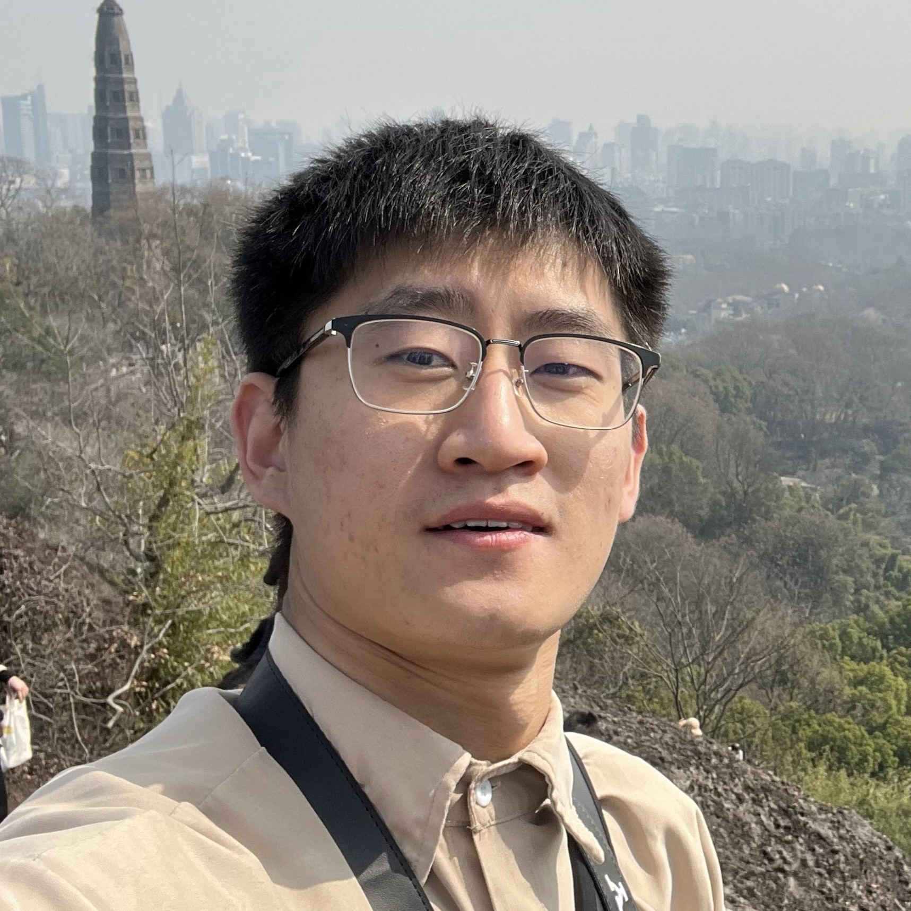
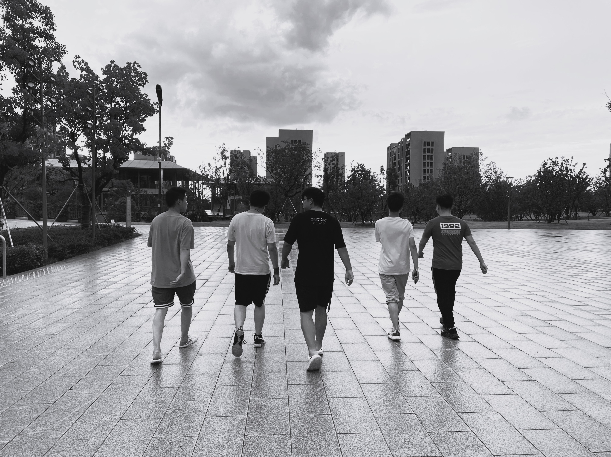
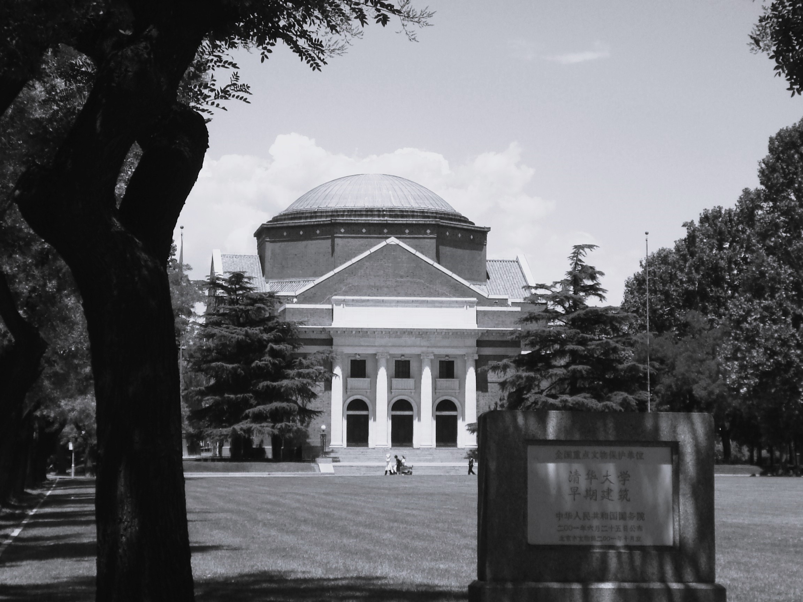

Jiaqi Zhang (张家祺)
Jiaqi (Jacky) Zhang is a 1st-year PhD student at The University of Queensland (UQ), under the supervision of Prof. Hongzhi Yin and Prof. Junliang Yu.
His research interest lies in Large Language Models, Personalization, Recommender Systems, LLM Reasoning, and LLM Agent.
He did a research internship at Tsinghua University, working under the guidance of Prof. Yong Li and Prof. Chen Gao.
He served as a research assistant at Westlake University, advised by Prof. Fajie Yuan
Prior to this, he received his M.S. degree from City University of Hong Kong (CityU) and
B.E. degree from Taiyuan University of Technology (TYUT).
Email /
Linkedin /
ORCID /
Github /
Google Scholar
|

Baochu Pagoda, Baoshi Mountain, West Lake, Hangzhou (Mar. 2023)
|
Education

|
Ph.D. in Computer Science
Jul. 2025 - Present
The University of Queensland (UQ), Brisbane, Australia
|

|
M.S. in Computer Science
Aug. 2020 - Jul. 2021
City University of Hong Kong (CityU), Hong Kong SAR, China
|

|
B.E. in Software Engineering
Sep. 2016 - Jul. 2020
Taiyuan University of Technology (TYUT), Taiyuan, Shanxi, China
|
|
Research Experiences

|
Research Intern (Advisor: Prof. Yong Li and Prof. Chen Gao)
Jun. 2024 - Jan. 2025
Tsinghua University, Beijing, China
- Work on LLM Agent and Embodied AI. Find Prof. Li and Prof. Gao's sparkling research on World Model, Embodied AI, and Social Computing here.
|
|
|
The Hong Kong Polytechnic University (PolyU), Hong Kong SAR, China
- Work on LLM application in Bioinformatics and Medical Image. Find Prof. TAN and Prof. Huang team's remarkable work on AI healthcare and Evolutionary Computation here.
|

|
Research Assistant (Advisor: Prof. Fajie Yuan)
Mar. 2022 - Aug. 2023
Westlake University, Hangzhou, Zhejiang, China
- Work on Modal-based Recommender Systems. Find Prof. Yuan and his brilliant team's research on AI foundation models, AI4biology, and Recommender Systems here.
|
|
Professional Services
- Conference Area Chair
IEEE International Joint Conference on Neural Networks (IJCNN), 2025
- Conference Reviewer/PC Member
ACM International Conference on Knowledge Discovery and Data Mining (KDD), 2025
International Conference on Learning Representations (ICLR), 2025
ACM International World Wide Web Conference (WWW), 2025
The AAAI International Conference on Artificial Intelligence (AAAI), 2025
IEEE International Joint Conference on Neural Networks (IJCNN), 2025
International Conference on Advanced Data Mining and Applications (ADMA), 2025
International ACM SIGIR Conference on Information Retrieval in the Asia Pacific (SIGIR-AP), 2025
ACM International Conference on Multimedia (ACM MM), 2023-2024
- Journal Reviewer
Neural Networks, Elsevier (NN), 2025
Springer Nature Computer Science (SNCS), 2025
ACM Transactions on Intelligent Systems and Technology (TIST), 2024
|
Honors & Awards
- Research Higher Degree Scholarship, The University of Queensland, 2025-2029
- HDR Travel Support Grant, The University of Queensland, 2026
- Outstanding Students Scholarship (Academics), Taiyuan University of Technology, 2017-2018
|
Miscellaneous
Behind every line of research lies a lived journey.
I enjoy random shooting throughout my academic journey, documenting moments across different universities and cities.
These images capture the subtle, often overlooked experiences behind research — moments that shape curiosity, persistence, and creativity.

I was fortunate to collaborate with a group of brilliant people here. We shared a stirring, yet memorable period.
Now scattered across the world, we continue on our new paths.
Best wishes to Yuanshen, Xinshen, The Principal, Shuji, Shaoge, Yushen, Jieshen, and many others.
(Walk to grab dinner, Westlake University, Jul. 2023)

(Walking past the grand auditorium at THU, Beijing, Jun. 2024)

(Tyto alba in Lone Pine Koala Sanctuary, QLD, Sep. 2025)
|
Template stolen from Jon Barron. Last update: Jan. 2026
© 2026 Jiaqi Zhang
|
| |
{kind=link}
{kind=link}
{kind=link}